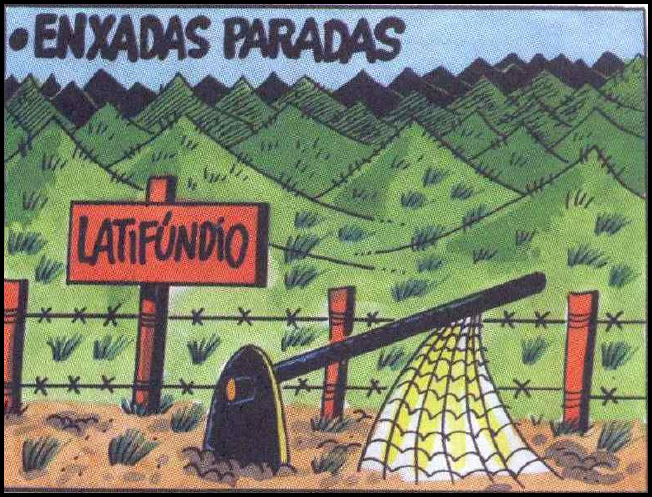

A urbanização no Brasil registrou marco histórico na década de 1970, quando o número de pessoas que viviam nas cidades ultrapassou o número daquelas que viviam no campo. No início deste século, em 2000, segundo dados do IBGE, mais de 80% da população brasileira já era urbana.

PORQUE
BARALDI, Márcio. http://www.marciobaraldi.com.br/baraldi2/component/joomgallery/?func=detail&id=178. (Acessado em 5 out. 2009)
Com base nas informações dadas e na relação proposta entre essas charges, é CORRETO afirmar que